DDIM · 2020 ↗
把采样改成可使用更少离散时刻的非马尔可夫过程，提供确定性采样路径。它奠定“改求解过程而非重训去噪器”的基础；少步过激仍会损失质量。
IMAGE GENERATION · INFERENCE ACCELERATION
从一次走得更远，到每次算得更少，再到让整条服务链路更有效。沿着七个问题，读懂近期方法之间的关系、收益与代价。
共同背景
文本条件先被编码，随机潜变量经过多次去噪，最后由解码器变成像素。扩散与 flow 模型的具体公式不同，但都面临串行迭代、每步网络计算和管线固定开销。加速方法的差别，首先在于它改变了哪一项。
请求耗时 ≈ 排队 + 文本编码 + 去噪循环实际耗时 + 解码 + 可选验证
普通 CFG 每步可包含有条件与无条件两个分支：50步可能对应100次分支评估；蒸馏到8步、单路引导时则可能只有8次。两路合成一个 batch 能减少部分执行开销，却没有消除两路计算。各论文对 NFE 的计数约定也应随实验一起读。
降低 FID、提高偏好分、保持文字与布局、接近原输出、保留多样性，是不同目标。FLOPs、attention 内核速度、主干延迟和完整出图耗时也不是同一指标。下文保留实验条件与反例，帮助判断收益是否适合自己的任务。
贯穿正文的教学例子是“红杯在蓝盒左边，海报上写着春日”。它用于解释机制，不是各论文共同测试过的 benchmark。
把采样改成可使用更少离散时刻的非马尔可夫过程，提供确定性采样路径。它奠定“改求解过程而非重训去噪器”的基础；少步过激仍会损失质量。
利用扩散 ODE 的结构构造高阶求解器，改善强引导下少次求值的采样。高阶方法可能包含多次评估或历史项，采样步数不能直接等同 NFE。
让学生的一步模仿教师的两步，逐轮减半。少步能力来自训练后的学生权重；直接删掉原模型步数不是同一操作。
要求同一轨迹不同噪声点映射到一致终点，支持一步或少步生成。它与平均速度学习都在缩短路径，但学习对象和训练约束不同。
用教师与学生 score 的差约束生成分布，并改进 fake-score 更新与训练稳定性。它是后续分布匹配、多样性保护与训练配方讨论的重要参照。
利用 U-Net 深层特征跨步变化较慢的性质进行复用。它开启缓存路线的一条关键支线；U-Net 的层级结构不能原样套到任意 DiT。
把难量化的异常方向交给高精度低秩支路，剩余部分低比特量化，并用融合内核控制额外开销。数值分解与执行内核要一起看。
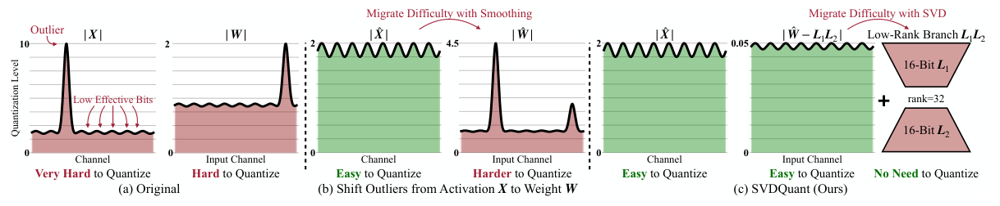
按空间分配多 GPU 工作，用上一步的上下文与异步通信重叠当前计算。跨步信息是近似复用；单图延迟下降不自动等于总 GPU 成本下降。
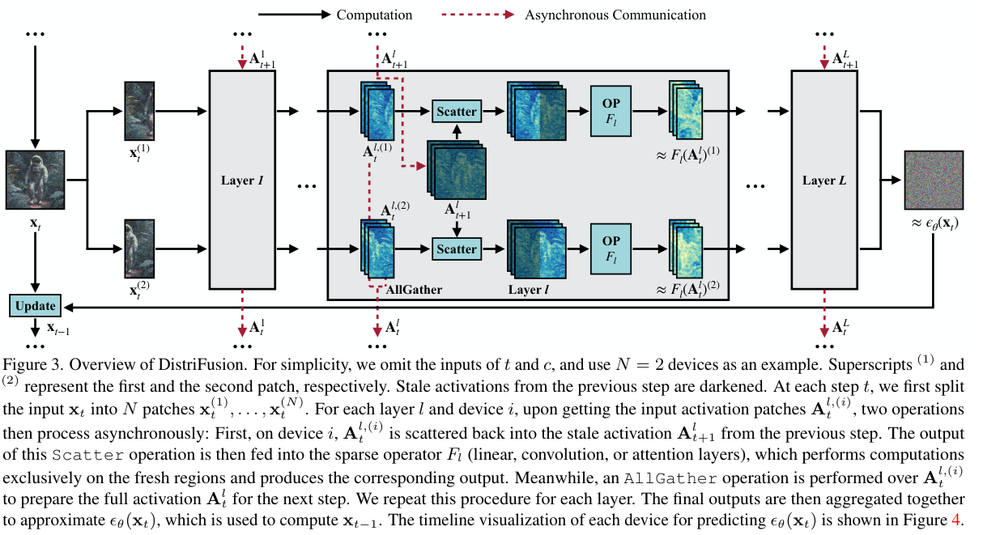
读图顺序：从左向右看不同GPU的patch计算与异步all-gather。关键是把上一时刻上下文通信与当前计算重叠，不能把计算与全部通信耗时简单相加。
实线是当前区域计算，红虚线是异步通信；背景特征来自上一步。注意跨块信息得到近似保留，区别于各 GPU 独立生成图块。 固定版本PDF该页 ↗从问题到论文
前三条把少步生成拆成“如何跨越时间、如何匹配分布、如何保住任务能力”；后四条继续处理已有模型和部署。图中的并列表示问题分组，不代表所有方法可无条件叠加。
39 篇重点论文
问题 01 / 07
最直接的瓶颈是串行调用太多。但从50步删到1步，模型不会自动学会一次完成全部位移。这条路线改变学习对象：从瞬时速度走向区间平均速度或端点映射，再考虑如何让学生自己走过的轨迹也受到训练。
SANA-Sprint 将一致性训练带入高效底座；MeanFlow 学平均速度，AYF 将端点映射与速度统一起来；TwinFlow 引入自对抗约束，FastGen-PDD 则一次预测多个区间。它们是围绕同一问题的不同构造，并非严格的版本升级链。
画“红杯在蓝盒左边，海报写着春日”：50次小修正变成4次长跳后，布局必须更早正确。平均速度模型学习的不是“当前往哪里动一点”，而是“这个区间总共该移动多少”。
SANA-Sprint: One-Step Diffusion with Continuous-Time Consistency Distillation
SANA 已把深压缩 latent 与高效主干结合，SANA-Sprint 再压缩串行采样次数；它将底座效率与少步训练放在一起，而非只换采样器。
核心想法 把既有流模型转成连续一致性学生，并补对抗细节。
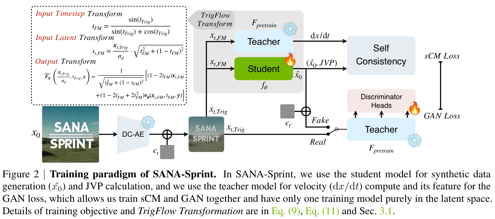
v4 · PDF 第4页 · 原图版权归作者；原始许可见论文页面。
| 任务与条件 | 对照与结果 | 出处 |
|---|---|---|
| 单图时延↓ / FID↓ / GenEval↑SANA-Sprint0.6B、1步；A100 BF16，latency batch1 | SANA0.6B20步：0.9s / 5.81 / 0.640.21s / 7.04 / 0.72 | v4 Table2，PDF第7页 |
| 4步质量/时延同0.6B模型系列，评估FID与组合遵从的取舍 | 0.32s / FID6.48 / GenEval0.76 | v4 Table2，PDF第7页 |
论文原文 ↗ v4 §3–4、Table2，PDF第7页
Mean Flows for One-step Generative Modeling
瞬时速度适合小步积分，一步生成需要整个区间的净位移。MeanFlow 直接学习平均速度，减少“局部预测准确却无法一步跨越”的错位。
核心想法 原生学习区间平均速度，一次跨完整生成路径。
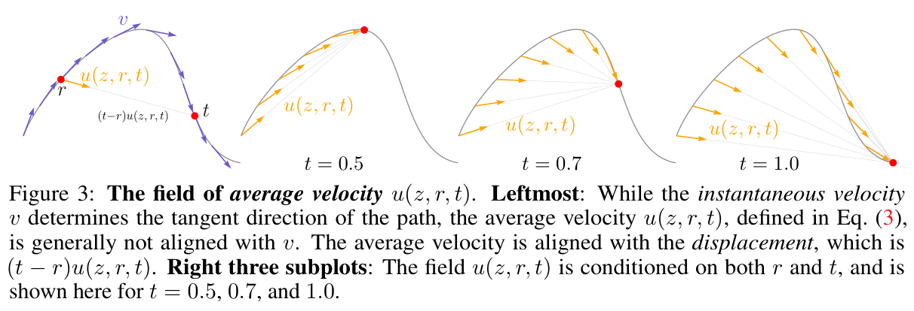
v1 · PDF 第4页 · 原图版权归作者；原始许可见论文页面。
| 任务与条件 | 对照与结果 | 出处 |
|---|---|---|
| ImageNet256 1-NFE FID↓从头训练；类别条件图像生成，非1024²文生图蒸馏 | 3.43 | v1 摘要；实验 |
论文原文 ↗ v1 §3、Eq3–11、实验
Align Your Flow: Scaling Continuous-Time Flow Map Distillation
端点一致性和 flow matching 常被当成两套方法；AYF 从任意起止时刻之间的映射出发，解释它们的联系与训练目标的区别。
核心想法 把只能回到干净图的一致性映射扩展为任意起止时间的连续flow map。
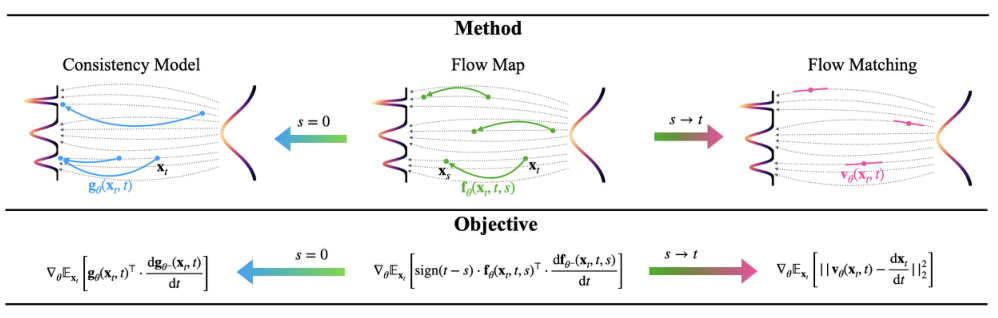
作者原图，v1，PDF文件第2页。仅裁切周围正文，未重绘。原文该页 ↗
| 任务与条件 | 对照与结果 | 出处 |
|---|---|---|
| ImageNet512，AYF-S 280M，FID↓同一非对抗AYF-S模型增加采样评估数；类别条件生成 | 1NFE 3.32；2NFE 1.87；4NFE 1.70 | v1 Table 2，PDF文件第8页 |
| 对抗项消融，ImageNet512，1NFEAYF-S→AYF-S+adv；同表同280M，不能把额外对抗训练说成无训练改进 | FID 3.32→1.92（−1.40） | v1 Table 2，PDF文件第8页 |
论文原文 ↗ v1，PDF文件第4–5、8页
TwinFlow: Realizing One-step Generation on Large Models with Self-adversarial Flows
外部教师、fake-score 网络和判别器使蒸馏训练复杂。TwinFlow 研究由模型自身建立正负时间分支的自对抗约束。
核心想法 一个网络用正时间表示真实数据流、负时间表示自身生成流，通过速度差做自对抗纠正。
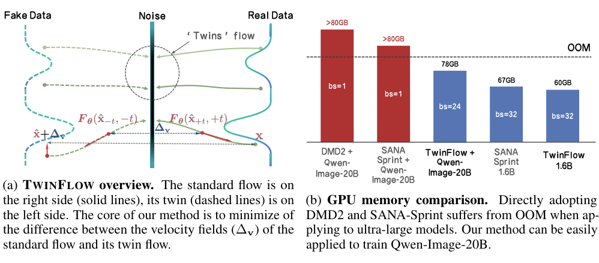
作者原图，v2，PDF文件第3页。仅裁切周围正文，未重绘。原文该页 ↗
| 任务与条件 | 对照与结果 | 出处 |
|---|---|---|
| Qwen-Image 20B LoRA，1NFERCGM→TwinFlow；同表一步评价；教师50×2NFE GenEval0.87、DPG88.32 | GenEval 0.52→0.86；DPG 59.50→86.52 | v2 Table 2，PDF文件第8页 |
| 0.6B单A100 BF16，1NFERCGM→TwinFlow；吞吐batch10，时延batch1。相同部署预算提高质量，非再次加速 | GenEval 0.80→0.83；两者7.30样本/s、0.23s | v2 Table 4，PDF文件第10页 |
论文原文 ↗ v2，PDF文件第4–5、8–10页
FastGen-PDD: Parallel Decoding Distillation for Image and Video Generation
即使一次能走一段，多个区间通常仍串行求值。PDD 让一次前向输出多个区间的平均速度，并用学生实际走出的中间状态训练。
核心想法 一次前向同时预测多个连续时间区间的平均速度，按块推进轨迹。

作者原图，v1，PDF文件第2页。仅裁切周围正文，未重绘。原文该页 ↗
| 任务与条件 | 对照与结果 | 出处 |
|---|---|---|
| Qwen-Image，同4NFE，GenEval/DPG作者统一重测检查点；DMD2*=Lightning step4 v2；OneIG-EN0.524→0.538 | DMD2* 0.85/88.25→PDD-Midpoint0.86/88.66 | v1 Table 3，PDF文件第8页 |
| 同4NFE，多样性/偏好权衡DMD2→PDD-Midpoint；Pick22.98→22.86。保留多样性并非偏好指标全部更高 | OneIG多样性0.095→0.174；HPSv2 32.34→31.33（下降） | v1 Table 4，PDF文件第8页 |
论文原文 ↗ v1，PDF文件第3–4、7–8页
问题 02 / 07
端点或轨迹回归容易平均掉细节，分布匹配因此成为少步生成的重要路线。新的问题随之出现：学生可能偏向少数好看模式、监督在噪声层级间不均衡，或只适应固定的几个采样点。
以 DMD2 为基础看六种补偿：ADM 学习分布差异；Phased-DMD 划分 score 专家；FlashDMD 按噪声层级安排 DMD/GAN；Decoupled-DMD 分开引导与匹配；DP-DMD 保护第一步的分支；CDM 补连续时间与离轨迹约束。
同一个红杯海报提示换十个种子，如果都变成相似构图，单张偏好分很高仍不代表保住了多样性。这里要同时看条件遵循、细节与种子之间的变化。
Adversarial Distribution Matching for Diffusion Distillation Towards Efficient Image and Video Synthesis
DMD2 用教师与学生的 score 差缩短采样，但固定散度的优化可能集中到少数模式。ADM 将分布差异交给可学习的判别器；DMDX 则先用 ADP 初始化，再做 ADM。
核心想法 把教师与学生的局部去噪预测送入同一个扩散判别器，以可学习的分布差异代替固定的匹配信号。
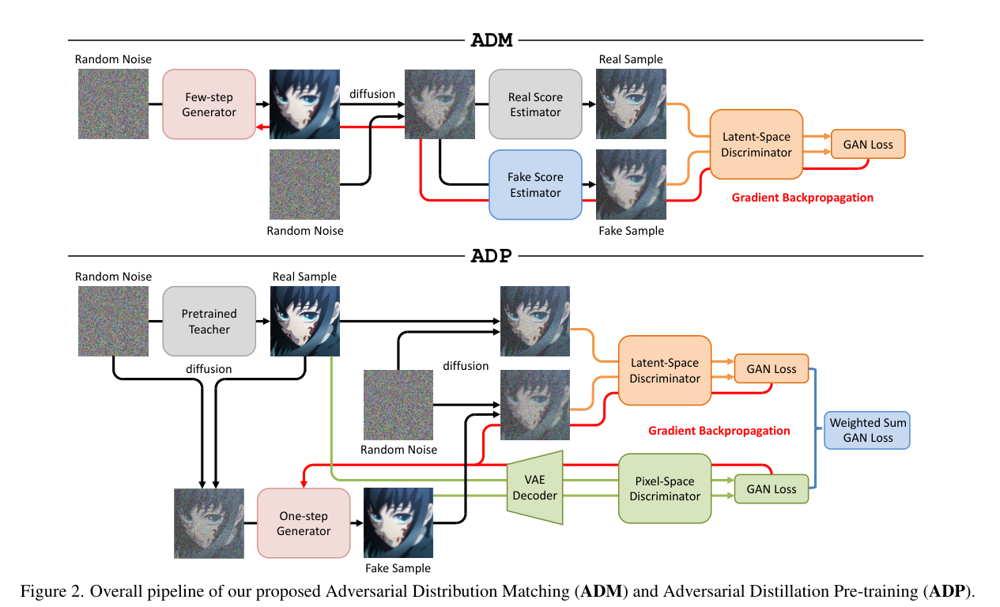
v1 · PDF 第4页 · 原图版权归作者；原始许可见论文页面。
| 任务与条件 | 对照与结果 | 出处 |
|---|---|---|
| SDXL，1 step / 1 NFECOCO 2014 的 10K prompts；全文微调；同文 Table 1 对照，质量指标不是端到端速度 | DMD2：HPSv2 27.4523；PickScore 22.0978DMDX：27.7046；22.2736 | v1 §5、Table 1，PDF 第7页 |
| SD3.5-Large，4 NFE同表 PickScore 更高，但 HPSv2 更低；不能归纳成学生全面超过教师 | 50-NFE 教师：HPSv2 27.9688ADM：27.7331 | v1 Table 2，PDF 第7页 |
Phased DMD: Few-step Distribution Matching Distillation via Score Matching within Subintervals
单个 fake-score 模型要覆盖很宽噪声范围。Phased-DMD 用分阶段专家分担监督，同时研究多步梯度与多样性的关系。
核心想法 将分布匹配分成噪声阶段，并为中间分布推导正确的子区间score目标。

| 任务与条件 | 对照与结果 | 出处 |
|---|---|---|
| 图像多样性，Wan2.1 4步DMD2→Phased DMD；21短提示×8种子；蒸馏模型4步CFG1，720×1280 | DINO余弦↓ 0.826→0.782；LPIPS距离↑ 0.521→0.544 | v3 Table 3，PDF文件第10页 |
| 反例：Qwen-Image 4步同21提示×8种子，1382²；两个多样性指标方向并不一致 | DINO余弦↓ 0.941→0.958（变差）；LPIPS↑ 0.309→0.322 | v3 Table 3，PDF文件第10页 |
论文原文 ↗ v3，PDF文件第2–7、9–10页
Flash-DMD: Towards High-Fidelity Few-Step Image Generation with Efficient Distillation and Joint Reinforcement Learning
分布匹配与像素对抗在不同噪声水平的效果不同。FlashDMD 将高噪声的语义监督和低噪声的细节监督分工，并讨论训练效率。
核心想法 按噪声阶段分配分布匹配与对抗监督，以独立score网络降低蒸馏训练开销，再交替进行奖励优化。

作者原图，v1，PDF文件第3页。仅裁切周围正文，未重绘。原文该页 ↗
| 任务与条件 | 对照与结果 | 出处 |
|---|---|---|
| SDXL 4NFE，COCO-10kDMD2→Flash-DMD TTUR1-1k；同表4NFE评价 | ImageReward 0.8748→0.9509；CLIP 0.3302→0.3292（下降） | v1 Table 1，PDF文件第7页 |
| 训练量代理作者以batch×迭代表示训练成本；不是实测同硬件GPU小时或推理时间比例 | 128×24k→64×1k，约2.1% | v1 Table 1，PDF文件第7页 |
论文原文 ↗ v1，PDF文件第4–8页
Decoupled DMD: CFG Augmentation as the Spear, Distribution Matching as the Shield
实际 DMD 梯度同时含条件引导增强与分布匹配。把两者绑在同一噪声采样上可能互相牵制，Decoupled-DMD 将它们拆开。
核心想法 拆开DMD的CFG推动项与分布纠偏项，分别选择重新加噪范围。

| 任务与条件 | 对照与结果 | 出处 |
|---|---|---|
| FID ↓；CLIP-S ↑SDXL；COCO2014-val 10K；严格沿用DMD2训练配置及GAN，仅替换re-noising安排 | DMD2四步：18.95；33.14Decoupled：17.80；33.62FID −1.15；CLIP +.48 | v1 Table 2，PDF第9页 |
| HPSv2.1 ↑同表；保留不利指标，避免“全指标更优” | DMD2：30.64Decoupled：30.34−.30 | v1 Table 2 |
| DPG Overall ↑Lumina-Image2；四步；只独立采样不能复现收益 | 共享全局噪声：83.90；独立全局：83.77独立混合范围：85.85对共享 +1.95 | v1 Table 1，PDF第8页 |
论文原文 ↗ v1 Eq.6 PDF第4页；Table 1–2 PDF第8–9页
Diversity-Preserved Distribution Matching Distillation for Fast Visual Synthesis
多步学生的第一步决定从随机噪声走向哪类构图。若最终奖励的梯度一路回传，这个分支可能收缩；DP-DMD 专门保护首步。
核心想法 首步保留教师的分支与构图映射，后续步继续DMD提质，并隔离后段梯度。

作者原图，v2，PDF文件第4页。仅裁切周围正文，未重绘。原文该页 ↗
| 任务与条件 | 对照与结果 | 出处 |
|---|---|---|
| SD3.5M，COCO2014-10k，4NFEDMD→DP-DMD；同底座、同4NFE、CFG3.5；提升多样性同时偏好分回退 | DINO多样性↑ 0.210→0.250；ImageReward 1.053→0.988（下降） | v2 Table 1，PDF文件第6页 |
| SDXL同4NFE对照DMD→DP-DMD；提升方向与SD3.5M不同，不能断言质量必然升或必然降 | DINO多样性 0.139→0.204；ImageReward 0.712→0.835 | v2 Table 1，PDF文件第6页 |
论文原文 ↗ v2，PDF文件第3–6、8页
Continuous-Time Distribution Matching for Few-Step Diffusion Distillation
固定4个训练锚点之间仍有空白，学生轻微偏离轨迹时也可能失稳。CDM 在连续时间和离轨迹位置补监督，延续了引导与匹配解耦的思路。
核心想法 在固定离散锚点之外补连续时间与离轨迹监督，避免换步数或小扰动后失稳。
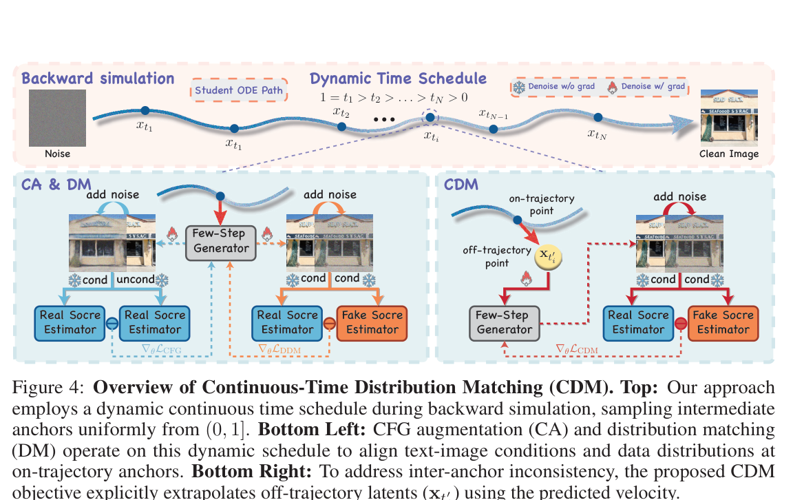
读图顺序：先看顶部动态时间锚点，再看下部CA、DM和离轨迹CDM三类监督。颜色区分训练信号，不能从图推断推理额外运行三套网络。
上方动态时间锚点，下方 CA、DM 与离轨迹 CDM 三类监督，保留原文完整图例。 作者原图4；固定版本v1；PDF文件第5页。可点击放大。 固定版本PDF该页 ↗| 任务与条件 | 对照与结果 | 出处 |
|---|---|---|
| SD3-Medium 1024²，4NFED-DMD*→CDM；PickScore测试2k提示，DPG约1k提示；作者统一评价 | HPSv3 9.176→9.561（+0.385）；DPG84.52→85.26（+0.74） | v1 Table 1，PDF文件第8页 |
| 与100NFE教师的边界同表教师/学生并非所有能力均改善；HPSv3高不代表文本对齐处处更强 | CLIP教师28.60；CDM 4NFE 27.98 | v1 Table 1，PDF文件第8页 |
论文原文 ↗ v1，PDF文件第5–8页
问题 03 / 07
同一个数学目标，换数据、文本表示、教师、适配参数或训练配比后，能力可能完全不同。这一章关注把少步生成变成可用模型所需的条件，而不是再发明一种采样步数。
SeedEdit 3 与 Qwen-Image-Flash 关心生成/编辑能力保留；Z-Image 与 Mage-Flow 展示完整蒸馏配方；EMF 从条件表示补足 MeanFlow；Glance 用很少图像适配，Calibri 则用无梯度搜索改残差贡献。
把“生成红杯”改成“只把杯上的字换成春日”，模型既要听懂编辑要求，又要保住其他内容。只看出图审美分无法回答编辑是否忠实。
SeedEdit 3.0: Fast and High-Quality Generative Image Editing
编辑既要理解改变什么，也要保持不该改变的内容。SeedEdit 3 的加速同时涉及指导分支蒸馏和量化，必须与编辑质量一起考虑。
核心想法 技术报告将实例轨迹、单路CFG蒸馏、统一噪声参照和量化算子组合到图像编辑链路。
原图阅读：打开论文方法图与图注 ↗。此处未内嵌可清晰复现的主图。
| 任务与条件 | 对照与结果 | 出处 |
|---|---|---|
| 编辑扩散链路，作者报告组合时延明确排除VLM阶段；蒸馏+量化组合；该节未给可复现实测硬件/并发/逐模块消融 | 约64s→8s（8×） | v2 §3.5.2，PDF文件第9页 |
| 单路CFG蒸馏，作者机制级估计两次网络评估→一次有guidance嵌入的评估；不是完整编辑工作流实测2× | 约2×该部分推理 | v2 §3.5.1，PDF文件第8页 |
论文原文 ↗ v2，PDF文件第7–9页
Z-Image: An Efficient Image Generation Foundation Model with Single-Stream Diffusion Transformer
Z-Image 的 Turbo 不是基模随意少跑几步，而是经蒸馏与后续优化得到的专用版本。它展示分布匹配如何进入完整模型配方。
核心想法 D-DMD拆开引导与正则，再用DMDR整合奖励。
原图阅读：打开论文方法图与图注 ↗。此处未内嵌可清晰复现的主图。
| 任务与条件 | 对照与结果 | 出处 |
|---|---|---|
| 调用/步数规格报告用语不同：steps与NFE需保留区别；图示比较细节与颜色 | 8步Turbo；原SFT教师约100 NFE | v5 §4.5、Figure13，PDF第20–22页 |
| 消融证据作者定性分阶段图示，未转录成虚构数值 | DMD→D-DMD→D-DMD+DMDR依次展示细节、颜色与偏好改善 | v5 Figure13，PDF第21页 |
论文原文 ↗ v5 §4.5.1–4.5.3、Figure13，PDF第20–22页
Glance: Accelerating Diffusion Models with 1 Sample
为大型模型另做一次完整蒸馏成本很高。Glance 探索用极少图像和参数高效适配器获得低步数行为，核心问题是能迁移多少能力。
核心想法 冻结大模型，用高/低噪声专用Slow-Fast LoRA，以极少样本学习非均匀跳步。

作者原图，v2，PDF文件第2页。仅裁切周围正文，未重绘。原文该页 ↗
| 任务与条件 | 对照与结果 | 出处 |
|---|---|---|
| Qwen-Image，相同10×2NFE，OneIG直接降步Qwen→Glance；1024²评价，学生训练仅1样本；Table2 | Alignment 0.802→0.868；Text 0.693→0.734 | v2 Table 2，PDF文件第4页 |
| FLUX少步质量取舍，COCO-10k FID↓同底座，少步仍损失分布质量；不能把“接近”写成全部指标无损 | 原50NFE 27.8；Glance 8NFE 34.2；10NFE 30.4 | v2 Table 1，PDF文件第4页 |
| FID ↓；CLIP ↑；VQA ↑Qwen-Image；1024²；COCO2014val10k captions；同一模型10×2NFE；只比较质量，GPU延迟未在该表提供 | 未适配Qwen10×2：39.1；0.265；0.918Glance10×2：37.8；0.280；0.932FID−1.3；CLIP+0.015；VQA+0.014 | Table 1，PDF 第4页；协议第5页 |
| Alignment ↑；Text ↑；Reasoning ↑Qwen-Image；OneIG1120prompts；教师50×2NFE对Glance10×2；训练1图、0.8GPU-hour（论文表计） | 教师：0.880；0.888；0.306Glance：0.868；0.734；0.303Alignment−0.012；Text−0.154；Reasoning−0.003；不能宣称文字无损 | Table 2，PDF 第4页 |
| Alignment ↑；Text ↑Qwen；Slow3–Fast5与单LoRA相同采样时刻；OneIG消融；不要与主表其他配置混成同实验 | Single identical：0.702；0.453Slow3–Fast5：0.849；0.614阶段专家增加+0.147；+0.161；仍需关注主表配置差异 | Table 3，PDF 第7页 |
论文原文 ↗ v2，PDF文件第3–6页
Calibri: Enhancing Diffusion Transformers via Parameter-Efficient Calibration
并非每个残差块都应以原始幅度参与少步推理。Calibri 冻结主权重，通过奖励驱动的无梯度搜索调节这些贡献。
核心想法 冻结DiT主权重，仅搜索少量残差缩放和输出系数，让少步配置更适配评价目标。
原图阅读：打开论文方法图与图注 ↗。此处未内嵌可清晰复现的主图。
| 任务与条件 | 对照与结果 | 出处 |
|---|---|---|
| FLUX，低预算校准原配置→Calibri；NFE减半，非同硬件实测时延减半 | 30NFE HPS11.41→15NFE HPS13.48；ImageReward1.15→1.18 | v2 Table 2，PDF文件第6页 |
| SD3.5 Medium同文减少采样预算的配置；仅说明作者任务/奖励下的质量预算权衡 | 80NFE HPS11.15→30NFE HPS14.10；ImageReward1.10→1.17 | v2 Table 2，PDF文件第6页 |
论文原文 ↗ v2，PDF文件第3–6页
Extending One-Step Image Generation from Class Labels to Text via Discriminative Text Representation
MeanFlow 的类别条件结果不能直接平移到复杂文本。EMF 把条件表示质量放到中心：一步跳跃之前，模型首先要读懂提示的组成关系。
核心想法 给MeanFlow选对文本表示，并加上起止时间条件，将类别条件一步生成扩展到文本。
原图阅读：打开论文方法图与图注 ↗。此处未内嵌可清晰复现的主图。
| 任务与条件 | 对照与结果 | 出处 |
|---|---|---|
| BLIP3o-NEXT 3B，同1步，GenEval原少步采样→EMF；同一底座规模，MeanFlow适配后的一步结果 | 0.46→0.74（+0.28） | v1 Table 3，PDF文件第7页 |
| 同4步，GenEval原少步→EMF；仍未超过完整30步教师，避免用一步标题暗示完全无损 | 0.86→0.90（+0.04）；原30步0.91 | v1 Table 3，PDF文件第7页 |
论文原文 ↗ v1，PDF文件第3–7页
Qwen-Image-Flash: Rethinking the Training Recipe for Few-Step Distillation
更强的 RL 教师不一定在所有蒸馏阶段都更好。Qwen-Image-Flash 研究数据组成、按步骤混合教师与生成/编辑配比。
核心想法 按步骤调教师，联合配比决定少步能力保留。
原图阅读：打开论文方法图与图注 ↗。此处未内嵌可清晰复现的主图。
| 任务与条件 | 对照与结果 | 出处 |
|---|---|---|
| T2I-Bench平均分↑4-NFE学生；内部基准风景/人物/文字，VLM评分 | 80-NFE Base：3.41 / 4.09Gemini3.1Pro：3.56；GPT5.5：4.15 | v3 Table2，PDF第7页 |
| 数据消融：文字分项↑portrait-only20K训练，Gemini3.1Pro评文字场景；相同2000iter协议 | text-centric20K训练：1.973.12+1.15分 | v3 Table1，PDF第5页 |
| 对RL教师的差距同Table2，同评分器；保留反向结果 | 80-NFE RL：3.74 / 4.263.56 / 4.15 | v3 Table2，PDF第7页 |
论文原文 ↗ v3 §4.2–4.4、Table1–3，PDF第4–8页
Mage-Flow: An Efficient Native-Resolution Foundation Model for Image Generation and Editing
少步主干会放大 VAE 和执行组织的占比。Mage-Flow 同时讨论4步训练、轻量VAE与 CFG 批执行，三种收益要分别理解。
核心想法 完整技术报告把四步Turbo、CFG批合并与轻量VAE作为不同成本项分别优化。

| 任务与条件 | 对照与结果 | 出处 |
|---|---|---|
| Packed CFG，单NVIDIA A100同模型、同轨迹，separate→packed CFG；硬件与步数均在Table3列明 | Base30步7.5089→6.5159s（1.15×）；Mage-Flow20步5.0076→4.3680s | v2 Table 3，PDF文件第13页 |
| 4步Turbo感知对抗消融无Adv→有Adv；Text-to-image，Table6a；LongText-CN0.783→0.801。非所有指标一致升 | TIIF-Short80.99→83.58；GenEval0.89→0.88（下降） | v2 Table 6a，PDF文件第23页 |
论文原文 ↗ v2，PDF文件第11–13、22–25页
问题 04 / 07
已有模型通常先从采样时间表与缓存入手，但二者省下的东西不同：时间表决定在哪里求值，缓存决定用真实特征还是预测特征。GFT 则提供一个训练侧对照：把引导写进单路模型，直接减少每步分支。
TORS 重新分配有限调用；TaylorSeer 从历史特征外推；DiCache 用浅层变化决定何时刷新；AutoTarget 为少步模型选缓存对象；Z-Cache 在下一个完整锚点到来后回看当前窗口。它们回答“何时算、缓存什么、如何预测、如何纠偏”四个不同问题。
海报早期左右布局正在变化时，复用错误特征可能固定错误构图；后期只做小修饰时则可能有余量。但“早晚”的定义随采样器、蒸馏步数和模型变化，必须重新测。
Visual Generation Without Guidance
普通 CFG 在每步计算有条件与无条件两个预测。GFT 从训练时学习引导分布，使推理可用单个条件预测，和关闭 CFG 有本质区别。
核心想法 训练时把引导分布写进单个条件模型，推理去掉CFG双支。

| 任务与条件 | 对照与结果 | 出处 |
|---|---|---|
| ImageNet256 FID ↓同论文Table2；微调GFT；估算去噪评估成本减半不含固定管线 | DiT-XL/2 + CFG：2.11+GFT免引导：1.99−0.12 | v2 Table 2，PDF第6页 |
| COCO2014 FID ↓零样本文生图；同Table3；保留小幅退化 | SD1.5 + CFG：7.87+GFT：8.10+0.23 | v2 Table 3，PDF第6页 |
论文原文 ↗ v2 Algorithm 1 / Figure 3 PDF第4页；Table 2–3 PDF第6页
Analyzing and Improving Training-Free Fast Sampling of Text-to-Image Diffusion Models
少步采样不只取决于用什么求解器，还取决于把有限的调用放在哪些时间点。TORS 将求解器、外层时间表、缓存对象、刷新间隔与预测器放进统一设计空间，重点改进时间表。
核心想法 用轨迹的曲率与挠率分配采样点，让每个区间承担近似相等的总旋转量。
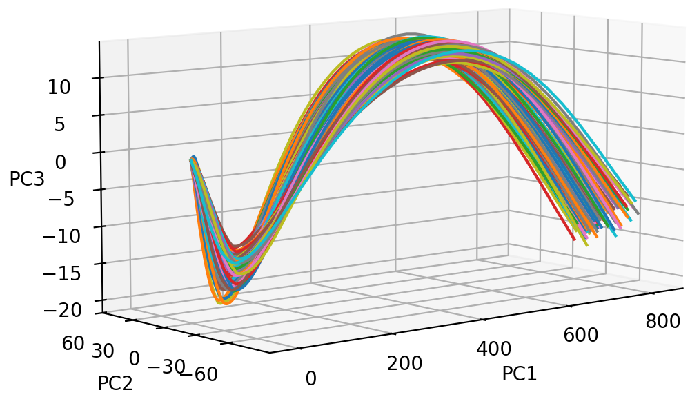
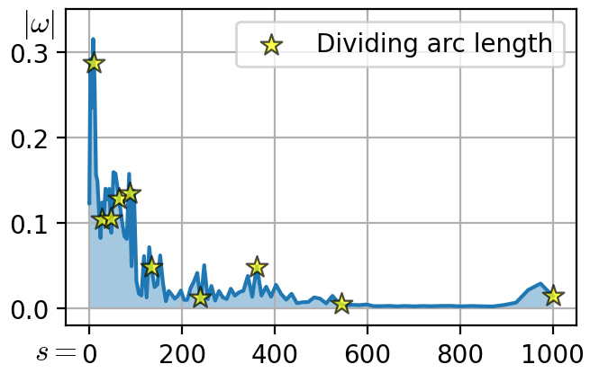
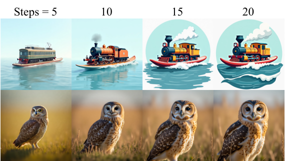
v2 · PDF 第9页 · 原图版权归作者；原始许可见论文页面。
| 任务与条件 | 对照与结果 | 出处 |
|---|---|---|
| FLUX.1-dev，10步DrawBench；guidance scale 7；实验平台最多4张 RTX A6000；50步基线 HPSv2 30.15，仍有差距 | 均匀表：IR 0.71；HPSv2 27.70TORS：IR 0.97；HPSv2 29.30 | v2 §6、Table 1，PDF 第11页 |
| FLUX.1-dev，GenEval同文 Table 2；组合能力指标，与上一行偏好指标分开看；不是完整管线5×的计时结果 | 10步 0.57；50步 0.65TORS 10步 0.67 | v2 Table 2，PDF 第11页 |
From Reusing to Forecasting: Accelerating Diffusion Models with TaylorSeers
直接复用上一步特征把变化率当成零。TaylorSeer 用历史刷新点估计导数，让跳过的时刻也能获得随时间演变的特征。
核心想法 从旧特征估计变化趋势，预测被跳过步骤。
原图阅读：打开论文方法图与图注 ↗。此处未内嵌可清晰复现的主图。
| 任务与条件 | 对照与结果 | 出处 |
|---|---|---|
| FLUX时延↓ / ImageReward↑FLUX.1-dev50步，N=6,O=1，启用efficient attention；硬件见原文实现 | 原17.20s / 0.98984.87s / 0.9953实际时延3.53× | v1 Table1 |
| 计算减少与时延的区别同一Table1配置，避免把FLOPs比当速度 | FLOPs3719.50T→744.81T（4.99×）；时延仅3.53× | v1 Table1 |
论文原文 ↗ v1 §3–4、Table1–2
DiCache: Let Diffusion Model Determine Its Own Cache
固定刷新间隔无法适应不同提示和阶段。DiCache 先做浅层探测，再决定是否继续计算深层，并预测缓存残差的变化。
核心想法 用浅层在线探针决定刷新，并对齐两次缓存的变化轨迹。
原图阅读：打开论文方法图与图注 ↗。此处未内嵌可清晰复现的主图。
| 任务与条件 | 对照与结果 | 出处 |
|---|---|---|
| 单图时延 ↓；LPIPS ↓Flux.1.0-dev；A800 80GB；LAION5B抽1K提示；探针m=1、δ=.4；LPIPS对原输出 | 无缓存：15.11sDiCache：4.69s；LPIPS0.27043.22×；−10.42s | v1 §4.1、Table 1（作者HTML） |
| 同条件时延/保真度同表同模型；LPIPS只是与原输出的差异 | TaylorSeer：4.83s；LPIPS0.4709DiCache：4.69s；LPIPS0.2704−0.14s；LPIPS −0.2005 | v1 Table 1 |
论文原文 ↗ v1 Algorithm 1、Eq.7–11、Table 1（作者HTML）
Rethinking What to Cache in Few-Step Diffusion Transformers: Solver-Aware Target Selection
从50步模型搬来的缓存位置，在4步蒸馏模型里可能不再稳定。AutoTarget 先校准模型与求解器，找出更适合复用的张量。
核心想法 先校准当前模型与求解器适合缓存的张量，再决定是否复用。
原图阅读：打开论文方法图与图注 ↗。此处未内嵌可清晰复现的主图。
| 任务与条件 | 对照与结果 | 出处 |
|---|---|---|
| 单图时延 ↓同一四步权重/求解器；硬件未在正文披露；仅同论文比较 | FLUX.1-schnell四步：1.444sAutoTarget：1.120scache-only 1.289×；不是16× | v1 Table 1，PDF第8页 |
| 时延 ↓；ImageReward ↑同表；非四步Flux；硬件未报告；保留质量下降 | PixArt-LCM四步：.158s；.443AutoTarget：.124s；.4131.277×；ImageReward −.030 | v1 Table 1，PDF第8页 |
论文原文 ↗ v1 §3–4、Table 1 PDF第8页；Figure 5 PDF第16页
Z-Cache: Accelerating Diffusion Transformers via Self-Reflection
TaylorSeer 等预测器从过去推未来；误差可能在一个缓存窗口里持续偏移。Z-Cache 等下一次本来就要计算的锚点出现后，回看并修正这个窗口。
核心想法 用前后两个锚点重估窗口内特征，从保存的起始 latent 重放窗口，继续走修正后的轨迹。
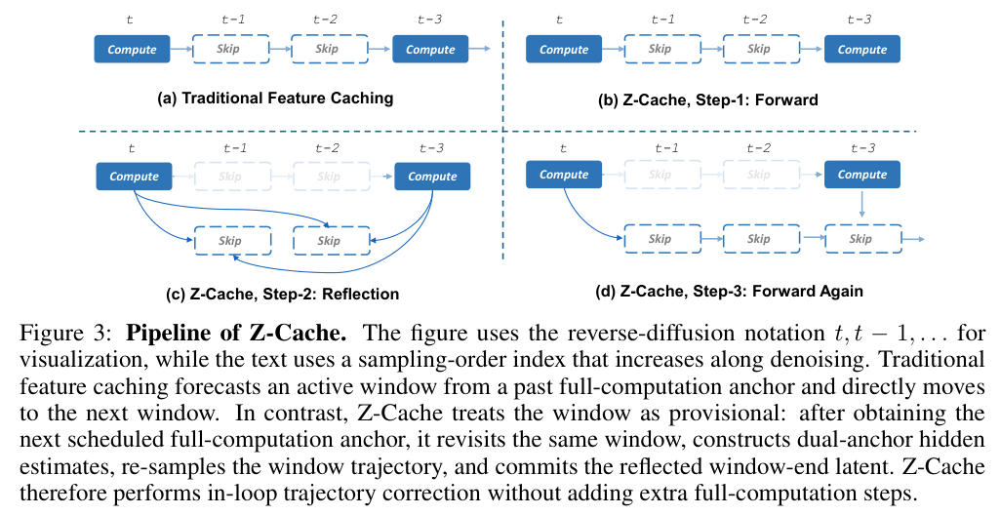
v1 · PDF 第3页 · 原图版权归作者；原始许可见论文页面。
| 任务与条件 | 对照与结果 | 出处 |
|---|---|---|
| FLUX.1-dev，TaylorSeer，等效间隔8H100；1024²；DrawBench 200图；与同提示同种子的50步输出比较；FLOPs比6.22×，实际延迟比2.93× | 2.83s；LPIPS 0.5190；IR 0.9292+Z-Cache：3.17s；LPIPS 0.4692；IR 0.9451 | v1 Table 2，PDF 第7页；Appendix A.2，第17页 |
| FLUX.1-dev，TeaCache，等效间隔6相同阈值0.8；保真度改善，延迟约翻倍；ImageReward 1.0246→1.0147也下降 | 2.53s；35.77 GiB；LPIPS 0.4691+Z-Cache：5.07s；39.99 GiB；LPIPS 0.4328 | v1 Table 2，PDF 第7页 |
问题 05 / 07
平坦背景、边缘和小字并不需要同样的计算预算；同一图像在不同噪声阶段也不一样。动态计算沿空间位置、注意力连接、patch 尺寸和网络子层四个方向分配工作量。
RAS 选择活跃区域；FlexiDiT 与 DDiT 改变 patch 模式；DC-DiT 学局部分块；PAROAttention 把不规则稀疏整理成硬件可用的块；SLA 给稀疏注意力补线性支路；Diff-ES 搜索逐阶段子网络。
大块纯色背景可以粗算，但“春日”的笔画可能需要细 token。省 FLOPs 之后还要支付路由、重排、回填和组批成本，显卡是否更快必须实测。
Region-Adaptive Sampling for Diffusion Transformers
整幅图统一删步会同时减少背景和复杂区域的更新。RAS 保留采样阶段，但按区域决定哪些 token 需要新计算。
核心想法 按区域变化只重算活跃 token，复用非活跃预测与 KV，并周期性全量刷新控制误差。
原图阅读：打开论文方法图与图注 ↗。此处未内嵌可清晰复现的主图。
| 任务与条件 | 对照与结果 | 出处 |
|---|---|---|
| 吞吐 ↑；FID ↓；CLIP ↑SD3；1024²；10k COCO caption-image对；单A10080GB测吞吐；注意正文§4.1写MSCOCO2017而Table2 caption写COCOVal2014，版本内不一致 | RFlow5步全量：1.43 image/s；39.70；29.84RAS7步、25%活跃：1.45 image/s；31.99；30.64近似同吞吐时 FID−7.71、CLIP+0.80 | Table 2，PDF 第6页 |
| FID ↓；CLIP ↑SD3；10步；平均12.5%活跃；误差重置消融 | 去掉 error reset：46.10；30.41完整 RAS：35.81；30.13reset使FID−10.29，但CLIP−0.28；不同质量指标存在取舍 | Table 4(a)，PDF 第8页 |
| FID ↓SD3；缓存 KV消融；分别比较28与10步，不能跨步合并 | 无KV：28步31.36；10步32.33有KV：28步24.30；10步35.8128步改善−7.06，10步反而+3.48；不应宣称缓存各配置皆提升 | Table 4(b)，PDF 第8页 |
论文原文 ↗ Table 2，PDF 第6页；Table 4(a)，PDF 第8页；Table 4(b)，PDF 第8页
FlexiDiT: Your Diffusion Transformer Can Easily Generate High-Quality Samples with Less Compute
高分辨率模型始终用小 patch，会在粗结构阶段花过多预算。FlexiDiT 给同一模型准备强弱计算模式，并通过训练使两者兼容。
核心想法 大 patch 的弱模式先画全局，小 patch 的强模式后补细节，以蒸馏适配同一 DiT。
原图阅读：打开论文方法图与图注 ↗。此处未内嵌可清晰复现的主图。
| 任务与条件 | 对照与结果 | 出处 |
|---|---|---|
| 相对FLOPs ↓；FID ↓；CLIP ↑；VQA ↑Emu1.7B DiT；1024²文生图；同一实验的动态/全计算配置；图像质量及FLOPs，不借用视频75%结果 | 100%；26.00；26.05；70.1753%；26.10；26.07；70.09FLOPs−47%；FID+0.10、VQA−0.08，近似而非严格无损 | Figure 7内结果表，PDF 第7页 |
| 相对FLOPs ↓；FID ↓；CLIP ↑T2I Transformer；256²文生图；DDPM；同组基线 | 100%；14.75；25.6058%；14.71；25.58FLOPs−42%；FID−0.04，CLIP−0.02 | Figure 7内结果表，PDF 第7页 |
| 人类偏好Emu；200 prompts；8名标注者、2400比较；动态50步（10强+40弱）对18步全强预算对照 | 18步全强作为配对参照动态配置 Win43.0%；Tie41.5%；Lose15.5%偏好比较；不是无提示词/无计算条件的通用胜率 | Figure 7右，PDF 第7页 |
论文原文 ↗ Figure 7内结果表，PDF 第7页；Figure 7右，PDF 第7页
PAROAttention: Pattern-Aware ReOrdering for Efficient Sparse and Quantized Attention in Visual Generation Models
注意力虽有冗余，任意稀疏模式却未必能高效落在 GPU 上。PAROAttention 先整理 token 形成规整块，再优化稀疏与量化。
核心想法 先重排 token 形成规整块结构，再分别优化稀疏掩码与分块量化，减少 attention 误差。

作者原图，v1，PDF文件第5页。仅裁切周围正文，未重绘。原文该页 ↗
| 任务与条件 | 对照与结果 | 出处 |
|---|---|---|
| FID-FP16 ↓；PSNR ↑；ImageReward ↑FLUX.1-dev；1024²；30步；COCO前1024 prompts；2条校准prompt；75% dense；稀疏比较A100/CUDA11.8 | DiTFastAttn：28.31；16.73dB；0.96PARO：19.47；20.95dB；1.01相对原FP16输出的距离−8.84；PSNR+4.22dB；不是对真实图像FID | Table 2，PDF 第8页；设置第7页 |
| ImageReward ↑；PSNR ↑同FLUX图像设置；50% dense；与同密度稀疏基线比较 | DiTFastAttn：0.81；12.49dBPARO：1.04；16.20dB+0.23；+3.71dB | Table 2，PDF 第8页 |
| CLIP ↑；ImageReward ↑；FID-FP16 ↓同FLUX图像设置；QK与PV均INT4；低比特比较RTX4090；此行只报告质量 | 完整FP16：0.258；1.02；0.00PARO INT4：0.258；1.00；19.65质量有近似误差；该图像表没有端到端加速比 | Table 2，PDF 第8页 |
论文原文 ↗ Table 2，PDF 第8页；设置第7页；Table 2，PDF 第8页
SLA: Beyond Sparsity in Diffusion Transformers via Fine-Tunable Sparse-Linear Attention
只保留最大注意力项会丢失中等强度的全局信息。SLA 让稀疏支路负责重要连接，线性支路补偿其余可压缩关系。
核心想法 把重要attention交给稀疏精算，把中等权重交给可训练线性补偿，极小权重跳过。
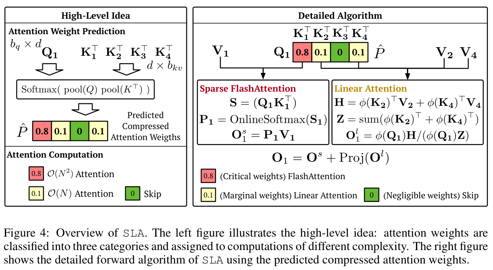
v2 · PDF 第5页 · 原图版权归作者；原始许可见论文页面。
| 任务与条件 | 对照与结果 | 出处 |
|---|---|---|
| FID ↓；attention FLOPs ↓；稀疏率 ↑LightningDiT-1p0B/1，1.03B参数；ImageNet512²；训练100k步、batch128；仅attention FLOPs，未给图像端到端硬件延迟 | FullAttention：31.87；12.88G；0%SLA：31.49；1.73G；87.50%FID−0.38；attention计算量约7.45×下降（−86.6%），非全管线7.45×加速 | Appendix A.2/Table 3，PDF 第15页 |
| FID ↓；attention FLOPs ↓同图像训练设置；与可训练SpargeAttn-T比较；不同稀疏水平 | SpargeAttn-T：46.05；3.16GSLA：31.49；1.73GFID−14.56；计算量−45.3%；不是等稀疏率单因素消融 | Appendix A.2/Table 3，PDF 第15页 |
论文原文 ↗ Appendix A.2/Table 3，PDF 第15页
DDiT: Dynamic Patch Scheduling for Efficient Diffusion Transformers
固定的粗到细切换时刻不一定适合每条轨迹。DDiT 根据潜变量变化决定 patch 尺寸，让每步计算量随生成状态变化。
核心想法 动态改变每步patch尺寸，按潜变量变化率决定何时粗算、何时细算。
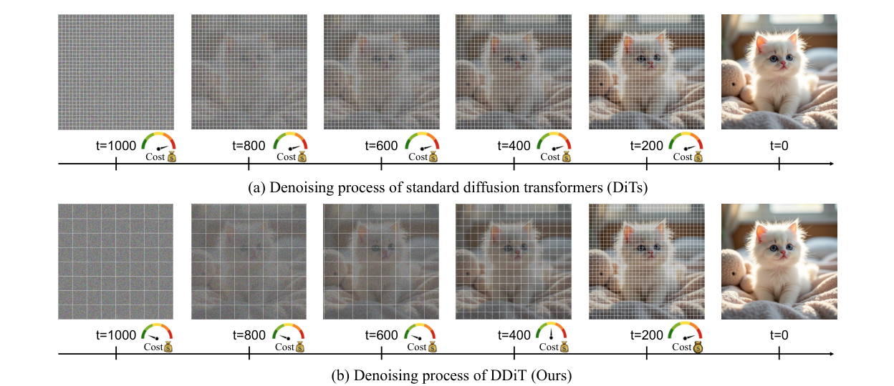
作者原图，v1，PDF文件第3页。仅裁切周围正文，未重绘。原文该页 ↗
| 任务与条件 | 对照与结果 | 出处 |
|---|---|---|
| FLUX.1-dev 50步，1024²作者同平台原模型→DDiT；本文未明确列出该表测试GPU，勿与别文秒数横比 | 12.0→5.5s/图（约2.18×）；COCO FID33.07→33.42（变差） | v1 Table 1，PDF文件第6页 |
| 与TeaCache组合DDiT+TeaCache δ0.4；速度进一步降低，FID较原模型+0.53，需检查任务质量 | 3.4s/图；FID33.60 | v1 Table 1，PDF文件第6页 |
论文原文 ↗ v1，PDF文件第4–6、8页
DC-DiT: Adaptive Compute and Elastic Inference for Visual Generation via Dynamic Chunking
FlexiDiT / DDiT 改变整步的 patch 尺寸；DC-DiT 进一步问：同一步的平坦背景和物体边缘，是否应占一样多的 token？
核心想法 在主干前学习动态分块，把预算留给难以预测的空间位置，再将稀疏表示还原成完整网格。
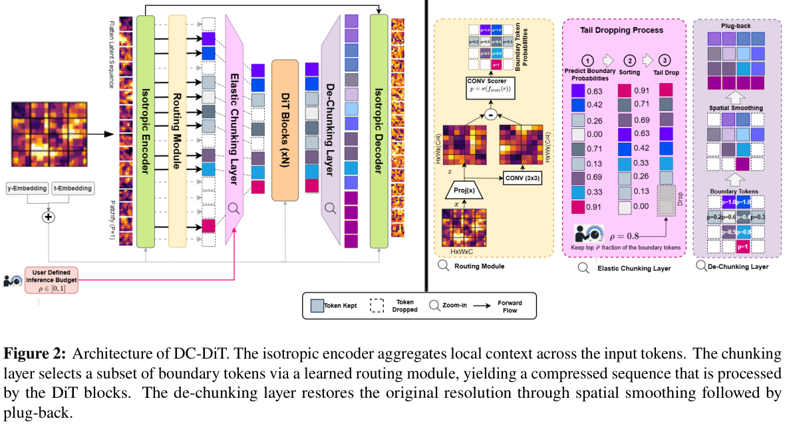
v2 · PDF 第4页 · 原图版权归作者；原始许可见论文页面。
| 任务与条件 | 对照与结果 | 出处 |
|---|---|---|
| ImageNet 512²，XL，Lite-CFG 1.25250步 DDPM；FID-50K；无条件支路 tail drop 0.9；计算量−36.8%，FID变差 | DiT：522.50 TFLOPs/img；FID 11.04DC-DiT：330.00 TFLOPs/img；FID 12.50 | v2 Table 1，PDF 第8页 |
| ImageNet 256²，B，Lite-CFG 1.25同文匹配训练计算预算；不同规模收益不相同，不能把本行改善移到上一行 | 22.93 TFLOPs/img；FID 29.7218.38 TFLOPs/img；FID 18.49 | v2 Table 1，PDF 第8页 |
Diff-ES: Stage-wise Structural Diffusion Pruning via Evolutionary Search
同一个被剪枝的子网络不一定适合所有去噪阶段。Diff-ES 搜索逐阶段子网并预计算权重更新，重点恢复压缩后的质量。
核心想法 在总剪枝预算下搜索逐阶段子网络，并预计算OBS更新权重，改善动态压缩后的质量。
原图阅读：打开论文方法图与图注 ↗。此处未内嵌可清晰复现的主图。
| 任务与条件 | 对照与结果 | 出处 |
|---|---|---|
| FID ↓；表中延迟 ↓；MACs（原数）↓DiT-XL/2；ImageNet256，50k生成图；20DDIM、CFG2.1；singleL40S48GB；OBS约31.25%稀疏；本表未交代batch及MACs量级单位 | Dense：FID4.49；83.60ms；MACs2.37Diff-ES：FID3.63；69.42ms；MACs1.66表中约1.20×；FID−0.86；MACs−30.0%，不补写未印单位 | Table 1，PDF 第11页；设置第10页 |
| FID ↓；延迟 ↓同DiT设置与近似同MACs；MosaicDiff 31.46% vs Diff-ES31.25% | MosaicDiff：4.01；68.91msDiff-ES：3.63；69.42msFID−0.38；实际延迟多0.51ms；并非所有基线都更快 | Table 1，PDF 第11页 |
| FID ↓；CLIP ↑；SSIM ↑SDXL-base1.0；COCO2017评测5k；1024²；20EulerAncestral、CFG7.5；L40S48GB；OBS30% | MosaicDiff：59.09；0.3020；0.5367Diff-ES：25.87；0.3214；0.7118FID−33.22；CLIP+0.0194；SSIM+0.1751；dense FID25.46仍略好 | Table 2，PDF 第12页；设置第10页 |
| 整体延迟 ↓；不同batch的收益边界DiT；43.75%稀疏；同一整体延迟协议；batch scaling，资源L40S48GB；不能同Table1不明batch数值混为一组 | Dense：batch1 158.7ms；batch8 670.3msPruned：batch1 188.5ms；batch8 489.6msbatch1反而+18.8%；batch8约1.369×更快，权重路由成本需组批摊销 | Appendix E/Table 10，PDF 第22–23页 |
论文原文 ↗ Table 1，PDF 第11页；设置第10页；Table 1，PDF 第11页；Table 2，PDF 第12页；设置第10页；Appendix E/Table 10，PDF 第22–23页
问题 06 / 07
当去噪只剩几步，单步内核、latent 网格、解码器和文本编码器都可能成为瓶颈。这些方法的评价单位分别可能是 attention 时间、主干延迟、解码时间或显存，不应混成完整出图速度。
SageAttention2++ 优化低精度注意力内核；OrbitQuant 处理量化分布；DC-Gen 把模型迁到更小的潜空间；PiD 合并解码与放大；Skrr 则压缩文本编码器。五者分别改精度、表示与管线的不同部位。
若去噪从10秒降到1秒，而解码仍需0.8秒，再把主干加速两倍，完整链路也只从1.8秒降到1.3秒。这个算例忽略其他开销，仅用于说明固定成本的占比会改变。
SageAttention2++: A More Efficient Implementation of SageAttention2
低精度 attention 的收益会被中间累积和格式转换抵消。SageAttention2++ 继续优化 SageAttention2 的实现路径，而非提出新的采样过程。
核心想法 改进量化注意力的FP8计算实现，降低SageAttention2的中间累积开销。
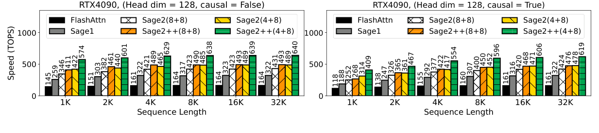
作者原图，v3，PDF文件第3页。仅裁切周围正文，未重绘。原文该页 ↗
v3 PDF第1–5页方法与实验；Figure 1是RTX4090、head_dim128、序列1K–32K、causal分别开/关的内核TOPS。Table 3包含FLUX/SD3.5图像指标及独立视频指标。这里只复述条件，不把峰值TOPS比当作出图倍率。
OrbitQuant: Data-Agnostic Quantization for Image and Video Diffusion Transformers
扩散模型的激活分布随时间、层和 CFG 改变，校准可能很脆弱。OrbitQuant 用旋转使分布更规则，再复用固定量化码本。
核心想法 用随机置换分块Hadamard旋转规整分布，再以固定码本做免校准量化。
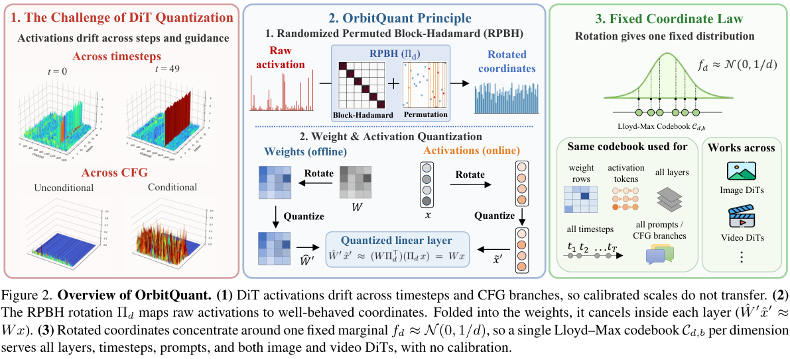
| 任务与条件 | 对照与结果 | 出处 |
|---|---|---|
| GenEval Overall ↑FLUX.1-schnell；GenEval；4步、CFG0；W4A4质量；基线部分数值引自AdaTSQ报告，非全部统一重跑 | FP16：0.664；SVDQuant W4A4：0.624OrbitQuant W4A4：0.703相对SVDQuant+0.079；相对FP16+0.039，仅该模型配置 | Table 1，PDF 第6页 |
| GenEval Overall ↑FLUX.1-dev；GenEval；50步、CFG3.5；W4A4质量 | FP16：0.667；SVDQuant W4A4：0.573OrbitQuant W4A4：0.633相对SVDQuant+0.060；相对FP16−0.034 | Table 1，PDF 第6页 |
| GenEval ↑；旋转时间 ↓FLUX.1-schnell；W3A3；3随机种子均值；旋转消融；时间是旋转本身而非整图 | Block-RHT：0.642；0.381sRPBH：0.674；0.451s质量+0.032；旋转额外+0.070s，存在开销取舍 | Table 3，PDF 第8页 |
论文原文 ↗ Table 1，PDF 第6页；Table 3，PDF 第8页
DC-Gen: Post-Training Diffusion Acceleration with Deeply Compressed Latent Space
更强压缩的 VAE 能减少主干 token，但已有生成器与旧 latent 空间绑定。DC-Gen 研究怎样把预训练模型迁移过去而不从头训练。
核心想法 以输入对齐、输出对齐和短LoRA后训练，把已有生成模型迁到深压缩latent空间。
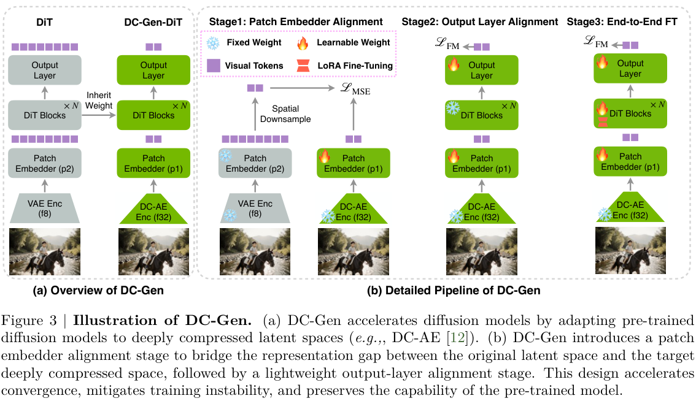
| 任务与条件 | 对照与结果 | 出处 |
|---|---|---|
| 主干延迟 ↓；CLIP ↑；GenEval ↑FLUX.1-Krea12B；MJHQ30K1024²；singleH100；TensorRT；仅DiT backbone latency，不含文本/VAE等完整管线 | f8：4.06s；27.93；0.69DC-Gen f32：0.88s；28.02；0.71主干约4.61×；CLIP+0.09；GenEval+0.02 | Table 1，PDF 第8页 |
| 主干延迟 ↓；CLIP ↑；GenEval ↑Z-Image-Turbo；同1024²评测及H100/TensorRT主干口径 | 原版：1.92s；27.61；0.84DC-Gen：0.47s；27.58；0.84主干约4.09×；CLIP−0.03，GenEval持平 | Table 1，PDF 第8页 |
论文原文 ↗ Table 1，PDF 第8页
PiD: Fast and High-Resolution Latent Decoding with Pixel Diffusion
高分辨率输出往往还需 VAE 解码和超分两步。PiD 用像素扩散统一这些操作，并研究基础 latent 模型能否提前结束。
核心想法 用带噪latent条件的少步像素扩散统一解码与放大，并允许基础生成器提前停。
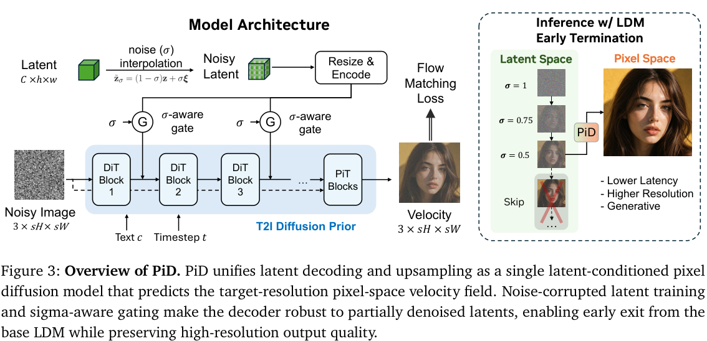
| 任务与条件 | 对照与结果 | 出处 |
|---|---|---|
| 解码延迟 ↓；NIQE ↓FLUX.1-dev latent；1000DPGBench prompts；4×上采样；PiD24/28；singleGB200；torch.compile；延迟仅latent-to-high-res解码管线 | VAE+SeedVR2-3B：1237.5ms；4.05PiD：211.2ms；3.50解码约5.86×；NIQE−0.55；不含基础LDM前24步 | Table 1，PDF 第10页；协议第9页 |
| 解码延迟 ↓；NIQE ↓同latent/任务/编译硬件；保留轻量超分更快的反例 | VAE+RealESRGAN：62.2ms；4.93PiD：211.2ms；3.50PiD约3.40×更慢；NIQE改善1.43，质量/时间取舍 | Table 1，PDF 第10页 |
| NIQE ↓；小文字PSNR ↑FLUX.1 latent；50步像素教师与4步学生；小文字还原与无参考质量，不可用更好NIQE替代忠实度 | Teacher：4.92；24.96dBStudent：3.50；24.19dBNIQE改善，但小文字PSNR−0.77dB | Table 2，PDF 第11页 |
论文原文 ↗ Table 1，PDF 第10页；协议第9页；Table 1，PDF 第10页；Table 2，PDF 第11页
Skrr: Skip and Re-use Text Encoder Layers for Memory Efficient Text-to-Image Generation
大文本编码器占据大量显存，却未必占据多数生成 FLOPs。Skrr 从去噪器真正接收到的文本表示出发，压缩参数并恢复语义。
核心想法 先按去噪器可见的文本表示误差跳过子层，再复用保留层，主要节省参数与显存。
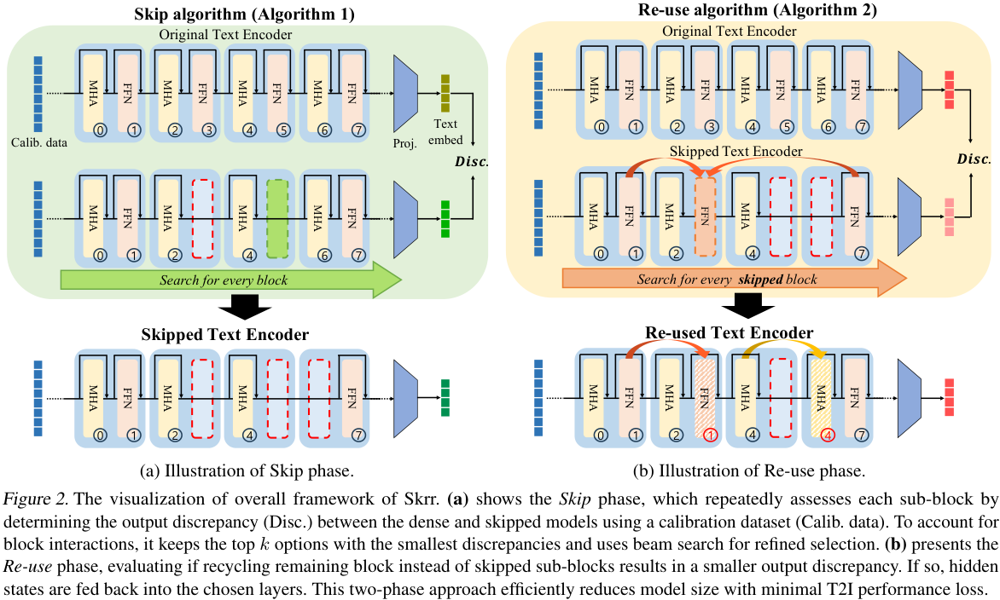
| 任务与条件 | 对照与结果 | 出处 |
|---|---|---|
| 参数；显存；FLOPsPixArt-Σ；COCO30K验证 prompt；Bfloat16 管线；模型参数/显存与 FLOPs 按全文管线统计 | 5.42B；10.18GB；91.94TFLOPs3.43B；6.46GB；91.90TFLOPs参数−36.7%；显存−3.72GB（−36.5%）；FLOPs仅−0.04TFLOPs | Table 2，PDF 第7页 |
| FID ↓；GenEval Overall ↑PixArt-Σ；最大41.9%文本编码器稀疏；COCO30K及GenEval；质量口径，不声明实测延迟 | 22.89；0.53919.93；0.442FID−2.96，但组合遵循分数−0.097 | Table 1，PDF 第6页 |
| CLIP ↑；DreamSim ↑；Counting ↑最大41.9%稀疏下 beam搜索；k=1与k=3；非端到端加速实验 | k=1：0.310；0.737；0.372k=3：0.313；0.746；0.450更宽搜索改善该组质量；仍有离线搜索成本 | Table 3，PDF 第8页 |
论文原文 ↗ Table 2，PDF 第7页；Table 1，PDF 第6页；Table 3，PDF 第8页
问题 07 / 07
用户感受到的是请求到达后多久拿到有用结果。排队、模型重复驻留、候选评分与数据搬运都可能支配这个时间；因此系统论文与单模型算法不能放进同一倍率排行榜。
GenServe 在图像与视频请求之间调资源；LegoDiffusion 跨工作流共享模型节点；Flash-BoN 在固定墙钟预算里多生成便宜候选再筛选。前两者提高服务效率，最后一个把节省的时间投入质量搜索。
同时来了三张海报请求和一个长视频：更快的 attention 仍可能让海报在队列中等待；调度器可以先让紧急海报完成。若只有一张海报但要求很高，另一种用法是把时间花在多个候选上。
GenServe: Efficient Co-Serving of Heterogeneous Diffusion Model Workloads
单张图片的去噪已经很快，仍可能排在一个长视频任务后面。GenServe 面向图像与视频共用 GPU 的场景，把优化目标改成按时完成请求的比例。
核心想法 在去噪步边界暂停视频，联合调整视频并行度和图像组批，按截止时间分配 GPU。
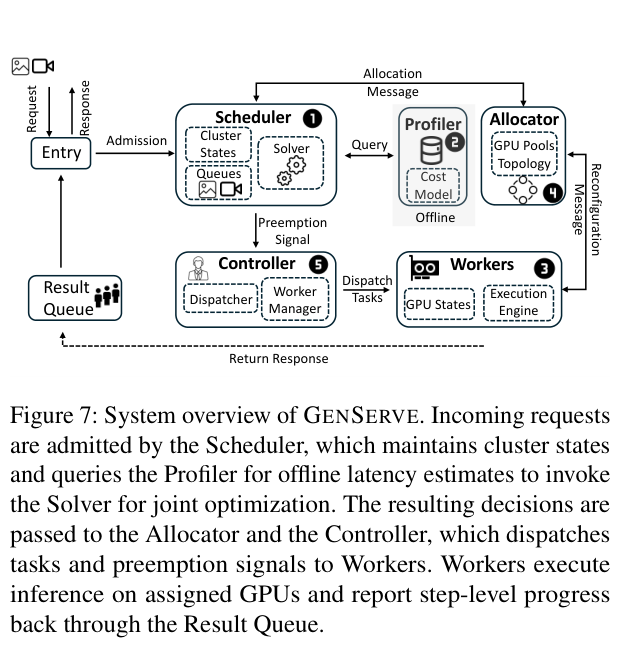
v2 · PDF 第6页 · 原图版权归作者；原始许可见论文页面。
| 任务与条件 | 对照与结果 | 出处 |
|---|---|---|
| 默认混合负载，SLO attainment8× RTX PRO 6000 Blackwell 96GB；SD3.5 Medium + Wan2.2-T2V-5B；100请求、图像/视频各半、24 req/min、σ=1；截止时间为1.5×离线延迟 | FCFS 59%；SRTF 71%GenServe 78% | v2 §6.1–6.2、Figure 10，PDF 第9页 |
| 同默认负载的视频按时完成率两者图像按时完成率均达100%；联合调度减少对视频的过度抢占 | SRTF 44%GenServe 56% | v2 §6.2，PDF 第10页 |
LegoDiffusion: Micro-Serving Text-to-Image Diffusion Workflows
不同出图工作流常重复加载同一个文本编码器、DiT、VAE 或适配器。整条工作流一起扩容，既浪费显存，也难以把请求集中组批。
核心想法 将工作流拆成可独立调度的模型节点，跨工作流共享模型并按节点扩缩容。
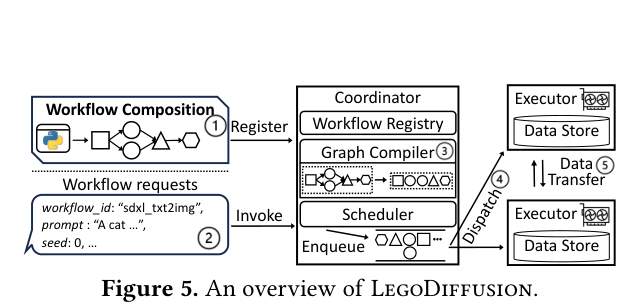
v1 · PDF 第5页 · 原图版权归作者；原始许可见论文页面。
| 任务与条件 | 对照与结果 | 出处 |
|---|---|---|
| 维持90% SLO达标率的请求率8–32张 H800 实机；12个 SD3 / SD3.5-Large / Flux-Dev / Schnell 工作流；默认截止时间2×独立运行延迟；另有256GPU模拟，不能混为实机 | 最强整工作流基线 Diffusers-S作者六组设置中最高可承受3×请求率 | v1 §7.1–7.2、Figure 9，PDF 第10–11页 |
Flash-BoN: Instant Drafts for Inference-Time Scaling in Diffusion Models
加速也能用于在固定时间里多试几张图，再挑出符合提示的一张。只算生成 NFE 会漏掉评分器与候选搬运成本，Flash-BoN 直接约束墙钟时间。
核心想法 联合搜索便宜草稿配置，以分阶段评分筛选候选，再对胜出的 latent 完成精算。
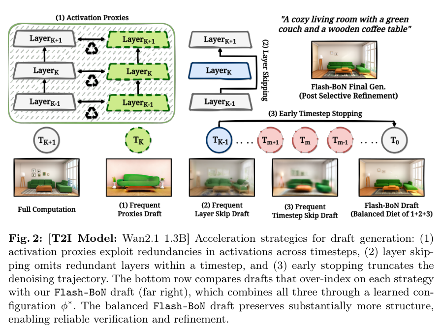
v1 · PDF 第5页 · 原图版权归作者；原始许可见论文页面。
| 任务与条件 | 对照与结果 | 出处 |
|---|---|---|
| FLUX.1-dev，GenAI-Bench 归一化AUC↑H200；30–300秒预算曲线；300 prompts；计入生成、验证、细化和数据传输；不是单个预算点的8%正确率增长 | Best-of-N 0.60Flash-BoN 0.68 | v1 §5、Table 1 / Figure 3，PDF 第9–10页 |
| FLUX.1-dev，GenEval 归一化AUC↑同墙钟预算评价；最终生成器不变，但候选选择改变输出分布 | Best-of-N 0.42Flash-BoN 0.47 | v1 Table 1，PDF 第10页 |
把论文放回实际任务
| 手头的约束 | 先读哪条路线 | 组合时要重新检查什么 |
|---|---|---|
| 已有多步权重，不能重新训练 | TORS、TaylorSeer、DiCache；再测具体内核 | 同种子质量、真实单图延迟；刷新与时间表改变会相互影响 |
| 已有4–8步蒸馏权重 | AutoTarget；低精度与解码固定成本 | 少步轨迹冗余较少，缓存收益不能套用50步倍率 |
| 能训练学生，重视文字与编辑 | 分布匹配 + 能力适配 | 教师来源、训练分布、编辑忠实度、种子多样性分别测 |
| 高分辨率，主干太重 | 动态 token / attention、DC-Gen | 小字、边缘、空间关系以及路由/回填开销 |
| 模型放不下 | SVDQuant、OrbitQuant、Skrr | 参数显存与激活峰值；真实低比特内核是否可用 |
| 并发请求等待太久 | GenServe、LegoDiffusion | 负载、截止时间、GPU数与互联；p50/p95、吞吐和GPU-seconds |
| 时间预算固定，想挑更好的图 | Flash-BoN | 评分器耗时与偏置、数据搬运、最终质量是否独立评估 |
完整模型报告也提供工程参照：Seedream 2、Seedream 3、Seedream 4、Qwen-Image 2与HY-Image 3展示多项优化共同进入生成系统的方式。整套系统的收益包含底座、训练、精度和执行组织，理解单项贡献仍应回到受控对照。
延伸阅读
正文保留每篇论文的版本、实验条件和图源。需要扩大阅读范围时，可以继续查阅此前整理的候选论文、摘要与早期方法。